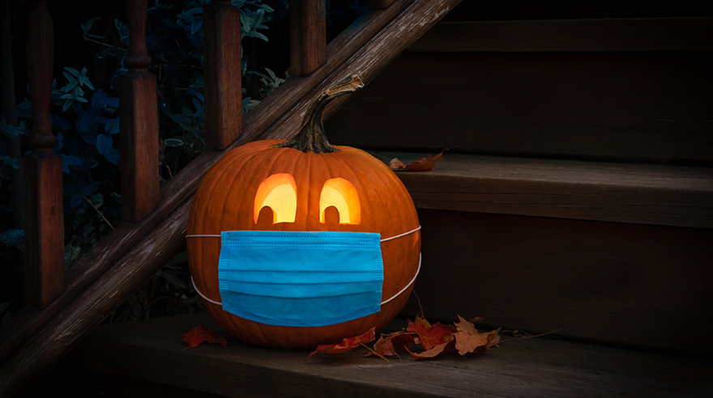

Auch in 2020 könnt Ihr Euch "Am Hang" gruseln!
Sicherheit geht vor, aber mit Spaß für alle:
Kleine Gruppen – Statt in großen Gruppen durch den Ort zu ziehen, kann man einfach in kleinen Gruppen aus ein oder zwei Haushalten durch die Straßen geistern.
Abstand – Vor unserem Haus und in der offenen Garage gibt es einiges anzuschauen, genug Platz und frische Luft, um sich nicht zu nahe zu kommen.
Süßigkeiten – waren und sind auch in diesem Jahr Selbstbedienung.
Kontaktdaten – In Absprache mit dem Ordnungsamt bitten wir möglichst alle darum, uns wie bei einem Restaurantbesuch die eigenen Kontaktdaten und die Namen der Begleitung aufzuschreiben. Dafür liegen Zettel bereit.
Wir freuen uns auf Euch! 👻 🎃
Bei Fragen und Sorgen wenden Sie sich an:
haunted[at]zadean.com